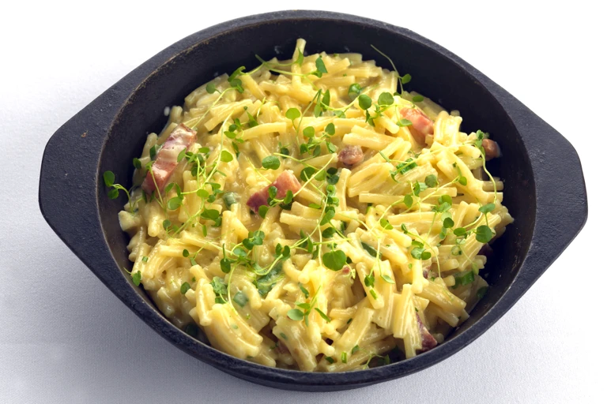

Ingredients

- 400g of macaroni pasta
- 150g of soft processed cheese
- 150ml of whipping cream
- 1 spring onion, finely sliced
- 4 slices of cooked ham, chopped
- 1 handful of breadcrumbs
- 25g of Parmesan, grated
- salt to taste
- pepper to taste
Method
- Place the pasta into a large pan of boiling salted water and cook until just soft. Drain well.
- Add the cheese and whipping cream into a pan over a low heat and bring to the boil, stirring well.
- Remove the sauce from the heat and beat well before adding the sliced spring onion and cooked ham, remove the pan from the heat.
- Add the pasta to the cheese sauce, season with salt and pepper.
- Sprinkle with breadcrumbs and the Parmesan, place the dish under a hot grill until cooked through. Serve the macaroni cheese immediately.